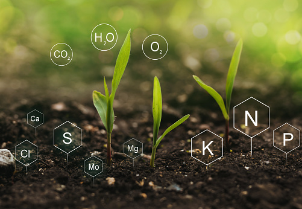
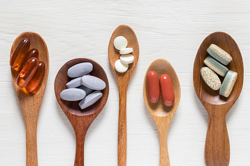

우리를 건강하게 만드는 요소는 무엇이 있을까요? 한번 생각해 봅시다. 가장 먼저 떠오르는 3가지 요소를 이야기해보세요 :)
저는 '영양,운동,휴식' 세가지 의 키워드가 떠오릅니다.
우리 웹사이트는 이 3가지 요소 내에서 건강을 관리하는 방법을 알려드리도록 하겠습니다.

영양소란?
우리는 생명을 가지고있는 생물입니다. 많은 종류의 생물이 지구상에 존재하며 특정한 기준에 따라 동물,식물,미생물 등으로 나뉩니다.
우리는 동물이기 때문에 필요한 에너지를 찾아 끊임없이 움직여야합니다.
신체는 에너지를 합성것 보다 에너지 소비를 하는 비중이 높기 때문에 필요한 물질을 꼭 섭취해야 생명을 유지할수 있습니다. 이것을 우리는 영양소로 배우고 있죠. 현대인에게 부족한
영양소가 무엇있고 이로인해 발생하는 영향에 대해 한번 알아보도록 하겠습니다.
우리의 몸은 O(산소), C(탄소), H(수소), N(질소)가 주 구성물질이며 Ca(캄슘), P(인)등의 "60여가지"의 물질로 구성되어 있습니다. 어렴풋이 ''사람의 절반 이상은 물'이다는말을 들어봤을겁니다.
물의 구성은 H20입니다. 수소(H)2개와 산소(O)1개로 구성되어있습니다. 수소(H)와 산소(o)는 우리몸의 70%나 되는 구성 성분이죠.
가장많은 우리몸에 성분인 수소, 산소, 탄소, 질소는 구성,모양, 그리고 갯수에 따라서 물이나 포도당이 되기도하며 단백질이 됩니다. 우리는 이것들을 음식을 통해 공급 받고있습니다.
그 다음으로 중요한 영양소로Vitamine이 있습니다.
'Mineral'에 대해 더 알고싶다면 이곳을 클릭해주세요.

비타민과 결핍
우리몸에 필요한 영양소는 물, 탄수화물, 단백질, 미네랄이 있습니다. 다음으로 중요한 영양소는 비타민입니다. 비타민은 우리몸에서 극 소량을 차지하지만
매우 중요하며 그 가치는 최근에 어려 매체를 통해 재조명 받고 있습니다. 사실 비타민은 비교적 최근에 존재가 밝혀지게 되었는데요.
20세기 초반까지만 해도 비타민 결핍으로 인한 질병과 사망은 인과성을 알아내기 힘들었습니다. 왜냐하면 식품에도 극미량이 함유되어있고 우리몸에도 극미량이 존재하기 때문입니다.
또한 미량의 비타민을 분리하게 위해서는 고도의 과학기술이 필요했죠.